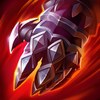
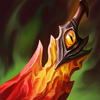
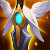
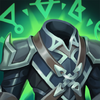
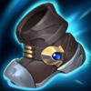
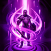
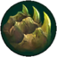

Peleadora
Dificultad Alta
HABILIDADES


PASIVA • DEFENSAS FLEXIBLES
Los ataques básicos a campeones otorgan un escudo igual al 20% de la Vida Máxima de Camille contra su tipo de daño (físico o mágico) por un breve momento.
1 • PROTOCOLO DE PRECISIÓN
El siguiente ataque de Camille inflige daño adicional y le otorga velocidad de movimiento adicional. Puedes volver a lanzar este hechizo durante un breve periodo e infligirá mucho daño adicional si Camille se toma un momento entre ambos ataques.
2 • BARRIDO TÁCTICO
Camille ataca en un área en cono después de un retraso e inflige daño. Los enemigos que se encuentren en la mitad exterior quedarán ralentizados y recibirán daño adicional al mismo tiempo que curan a Camille.
3 • GANCHO
Camille se impulsa a sí misma hacia un muro, salta y, al aterrizar, lanza a los campeones enemigos por el aire.
DEFINITIVA • EL ULTIMÁTUM HEXTECH
Camille se desplaza a un campeón objetivo, lo inmoviliza en el área y lanza hacia atrás a otros enemigos.
CONFIGURACIÓN
OBJETOS
-
Fuerza de la Trinidad
3533+200 Vida Máxima
+20 Daño de Ataque
+30% Velocidad de Ataque
+25 Aceleración de Habilidad
FERVOR: +5% de Velocidad de Movimiento.
ESPADA ENCANTADA: Usar una habilidad provoca que el siguiente ataque dentro de 10 seg infija daño físico adicional igual al 200% de Daño de Ataque básico. (1.5 seg de Enfriamiento).
El daño se reduce contra estructuras.
RABIA: Los ataques otorgan 20 de Velocidad de Movimiento y los asesinatos 60 de Velocidad de Movimiento durante 2 seg. Los efectos adicionales no se acumulan. Los campeones a distancia obtienen la mitad de las cantidades. -

Guantelete de Sterak
3200+400 Vida Máxima
SEVERO: +50% de Daño de Ataque básico. Solo aplica para campeones cuerpo a cuerpo.
SALVAVIDAS: El daño que te deje con menos del 35% de Vida te otorga un escudo igual al 75% de Vida adicional que dacae a lo largo de 3 seg (90 seg de Enfriamiento).
FURIA DE STERAK: Activar Salvavidas aumenta tu tamaño y te otorga un 30% de Tenacidad durante 8 seg. -

Danza de la Muerte
3000+300 Vida Máxima
+35 Daño de Ataque
+15 Aceleración de Habilidad
BAILE: +10% de Vampirismo Físico.
CAUTERIZAR: Un 30% del daño recibido se inflige como efecto de Sangrado durante 3 seg. -

Ángel Guardián
3100+40 Daño de Ataque
+40 Armadura
RESUCITAR: Tras recibir daño letal, te restaura un 50% de la Vida básica y un 30% de Maná tras 4 seg de estasis. (210 seg de enfriamiento).
-

Apariencia Espiritual
2900+350 Vida Máxima
+100% Regeneración de Vida
+45 Resistencia Mágica
+10 Aceleración de Habilidad
BENDITO: Aumenta todos los efectos de curación, regeneración y de drenar sobre ti mismo en un 30%.
-

Botas de Mercurio
1000CALZADO: +40 de Velocidad de Movimiento.
MEJORADO: +10 de Resistencia Mágica.
TENACIDAD: Reduce la duración de aturdimientos, ralentizaciones, provocaciones, miedo, silencio, ceguera e inmovilizaciones un 35%.
CARRERA (ACTIVA): Aumenta la Velocidad de Movimiento un 15% durante 3 seg. Infligir o recibir daño de campeones desactiva los efectos de Carrera. (60 seg de enfriamiento). -

Encantamiento de Teleportación
800TELEPORTACIÓN (ACTIVA): Tras 3.5 seg de canalización, teletransporta tu campeón a un campeón, estructura o centinela aliado. (180 seg de enfriamiento).
RUNAS Y HECHIZOS
-
Sobre la Marcha
Al atacar, moverte y lanzar habilidades, juntas acumulaciones de Energía. Al llegar a 100 acumulaciones, tu siguiente ataque te curará y te otorgará velocidad de movimiento aumentada.
CURACIÓN: 15 - 85 (basado en nivel) + 30% adicional Daño de Ataque + 30% adicional Poder de Habilidad.
VELOCIDAD DE MOVIMIENTO ADICIONAL: 20% durante 1 seg.
En campeones a distancia, cura un 30% al atacar súbditos. -

Brutalidad
Obtienes 7 de Daño de Ataque y un 2% de Penetración de Armadura o 14 de Poder de Habilidad y un 2% de Penetración de Magia (adaptable).
-

Coraza Ósea
Después de recibir daño de un campeón, las siguientes 3 habilidades o ataques de un campeón contra ti dentro de 1.5 seg infligen de 30 a 60 (basado en nivel) menos daño (45 seg de Enfriamiento).
-

Dulces Frutos
Aumenta la curación de Frutamiel en un 25%. Cada vez que tú o un aliado cercano coma una Frutamiel, obtienes 20 de oro.
-
Barrera
ENFRIAMIENTO: 120 seg.
Obtienes un escudo que absorbe 115 de daño (115-465 basado en nivel) durante 2 seg. -

Destello
ENFRIAMIENTO: 150 seg.
Te teletransportas una distancia corta hacia delante o hacia la dirección objetivo.
CÓMO JUGAR CAMILLE
Camille es una luchadora del carril superior. Ella no es la mejor al principio del juego, pero una vez que alcanzas el nivel 5 y tienes acceso a Ultimátum Hextech (Definitiva), puedes bloquear a cualquier campeón del equipo enemigo para intentar conseguir una muerte en solitario o usarlo en peleas de equipo para bloquear. un objetivo de alto valor. Camille también tiene un potencial loco de 1 contra 1 y tiene una gran herramienta de escape con Gancho, lo que la convierte en una campeona perfecta de split push.
Camille también se puede jugar en la jungla. La construcción es muy similar a la del carril superior, ya que todos los elementos funcionan bien con las habilidades de Camille. Con Camille Jungla, querrás usar Sobre la Marcha como la runa principal para ayudarte a mantenerte al cultivar la jungla para mantenerte saludable. Tampoco necesita teletransportarse como jungla, por lo que puede beneficiarse mucho de Protocinturón para ponerse en la línea de fondo o tratar de escapar de una mala situación.